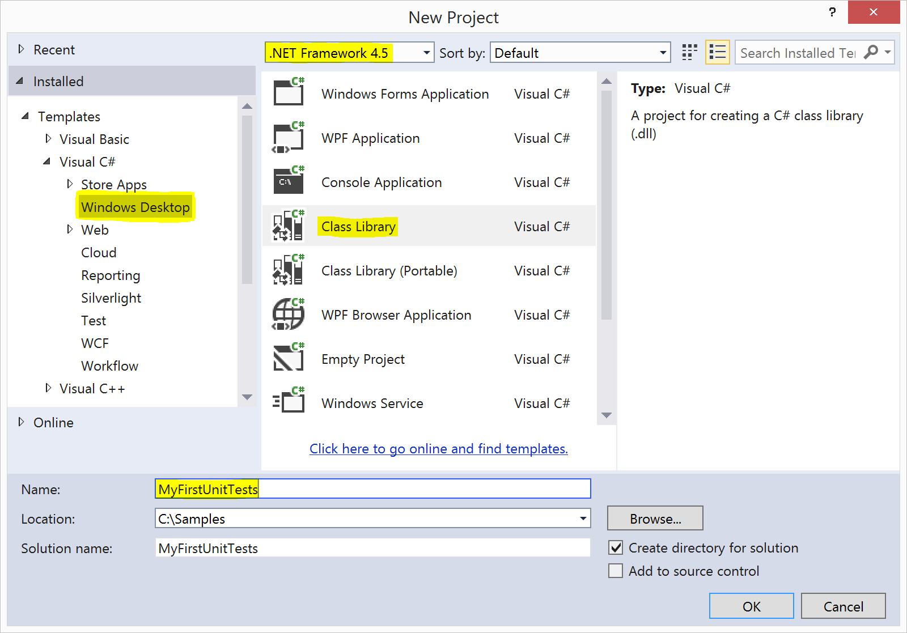
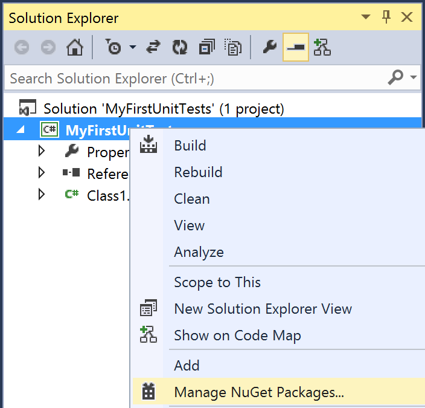
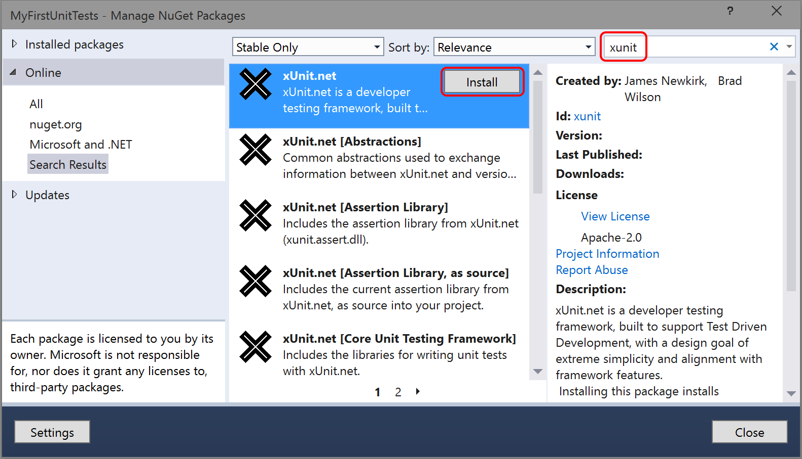
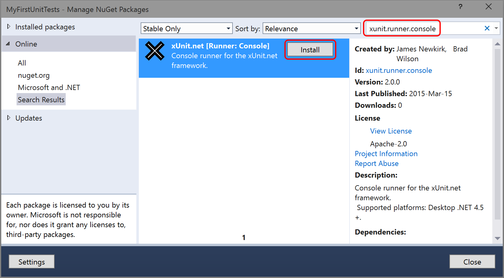

In this article, we will demonstrate getting started with xUnit.net, showing you how to write and run your first set of unit tests.
Note: The examples were done with xUnit.net v2.1. The version numbers and paths may differ for you, depending on which version you're using.
Let's start by creating a class library project, targeting .NET 4.5 (or later).
Open Visual Studio, and choose File > New > Project:

In Solution Explorer, right click the new project, and choose
Manage NuGet Packages:

Now in the NuGet package manager window, take the following steps:
nuget.org is selected under OnlinexunitxUnit.net package, and click Install
This package (xunit) is what's called a meta-package;
that is, it's a package that exists just so you can get references to several
other packages. In particular, it brings packages that include the core unit
testing framework and the assertion framework. If you open
packages.config, you'll see all the packages that get
referenced:
When you created the project, Visual Studio automatically created a file
named Class1.cs and opened it for you. Inside this class, add a
couple tests:
Build the solution to ensure that the code compiles. Now that you've written the first test, we need a way to run it. Let's install the NuGet package with the console runner.
Once again, right click on the project in Solution Explorer and choose
Manage NuGet Packages. This time, you're going to search for
(and install) a package named xunit.runner.console:

Unlike the previous package (which added references to the unit testing framework), this package is what's known as a solution-level package. Instead of having assemblies to reference, it adds some tools in your solution folder. We will use one of these tools—the console runner—to run your unit tests.
Open a command prompt or PowerShell command window. In the window, navigate to the root folder of your solution.
To run the console runner, use a command like the one hightlighted below. You should see output similar to this:
> packages\xunit.runner.console.2.1.0\tools\xunit.console MyFirstUnitTests\bin\Debug\MyFirstUnitTests.dll xUnit.net console test runner (64-bit .NET 4.0.30319.34014) Copyright (C) 2015 Outercurve Foundation. Starting: MyFirstUnitTests.dll MyFirstUnitTests.Class1.FailingTest [FAIL] Assert.Equal() Failure Expected: 5 Actual: 4 Stack Trace: MyFirstUnitTests\Class1.cs(16,0): at MyFirstUnitTests.Class1.FailingTest() Finished: MyFirstUnitTests.dll === TEST EXECUTION SUMMARY === MyFirstUnitTests.DLL Total: 2, Failed: 1, Skipped: 0, Time: 0.165s, Errors: 0
Note: your path names my vary, depending on what name you chose for your project and which version of xUnit.net you installed.
The console runner has several command line options, which include options for parallelization, test filtering, and result reporting. To learn more about the console runner options, run the console runner with no command line options.
Now that we've gotten your first unit tests to run, let's introduce one more way to write tests: using theories.
You may have wondered why your first unit tests use an attribute named
[Fact] rather than one with a more traditional name like Test.
xUnit.net includes support for two different major types of unit tests:
facts and theories. When describing the difference between facts and theories,
we like to say:
Facts are tests which are always true. They test invariant conditions.
Theories are tests which are only true for a particular set of data.
A good example of this testing numeric algorithms. Let's say you want to test an algorithm which determines whether a number is odd or not. If you're writing the positive-side tests (odd numbers), then feeding even numbers into the test would cause it fail, and not because the test or algorithm is wrong.
Let's add a theory to our existing facts (including a bit of bad data, so we can see it fail):
{% highlight C# %} [Theory] [InlineData(3)] [InlineData(5)] [InlineData(6)] public void MyFirstTheory(int value) { Assert.True(IsOdd(value)); } bool IsOdd(int value) { return value % 2 == 1; } {% endhighlight %}This time when we compile and run our tests, we see a second failure, for our theory that was given 6:
xUnit.net console test runner (64-bit .NET 4.0.30319.34014) Copyright (C) 2014 Outercurve Foundation. Starting: MyFirstUnitTests.dll MyFirstUnitTests.Class1.FailingTest [FAIL] Assert.Equal() Failure Expected: 5 Actual: 4 Stack Trace: MyFirstUnitTests\Class1.cs(16,0): at MyFirstUnitTests.Class1.FailingTest() MyFirstUnitTests.Class1.MyFirstTheory(value: 6) [FAIL] Assert.True() Failure Stack Trace: MyFirstUnitTests\Class1.cs(30,0): at MyFirstUnitTests.Class1.MyFirstTheory(Int32 value) Finished: MyFirstUnitTests.dll === TEST EXECUTION SUMMARY === MyFirstUnitTests.DLL Total: 5, Failed: 2, Skipped: 0, Time: 0.176s, Errors: 0
Although we've only written 3 test methods, the console runner actually ran 5 tests; that's because each theory with its data set is a separate test. Note also that the runner tells you exactly which set of data failed, because it includes the parameter values in the name of the test.
Separate documentation is available for running tests with Visual Studio.